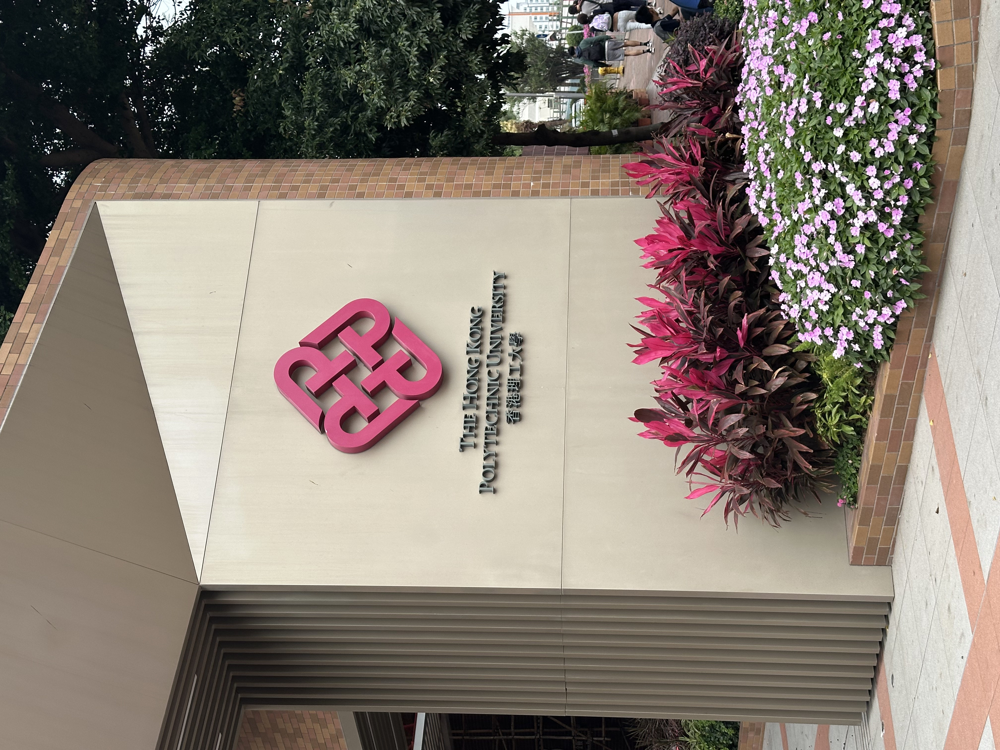
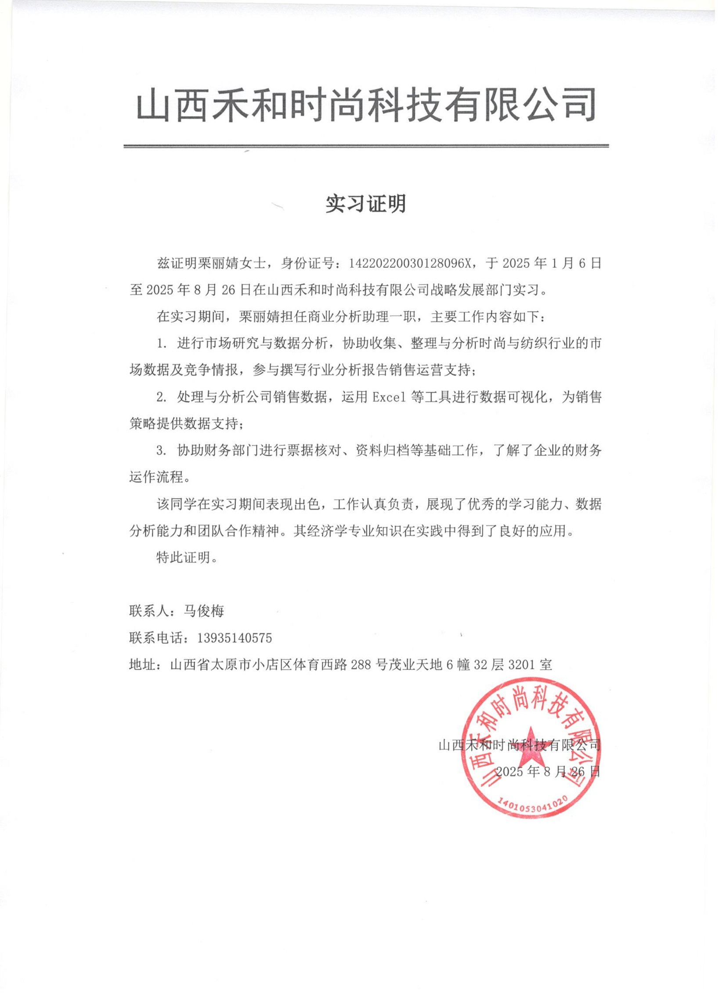
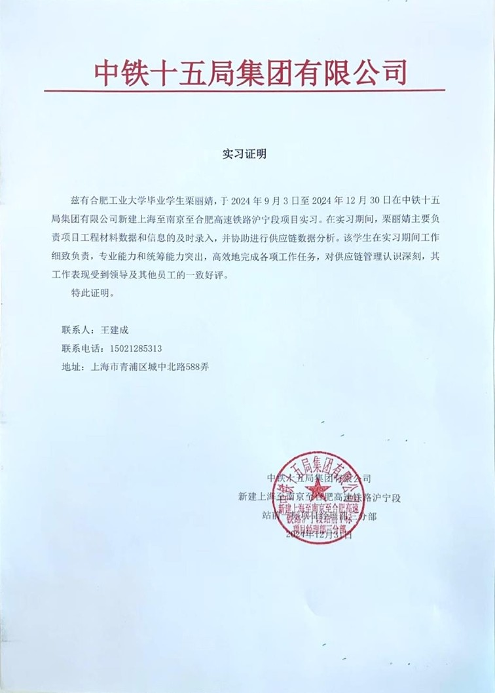
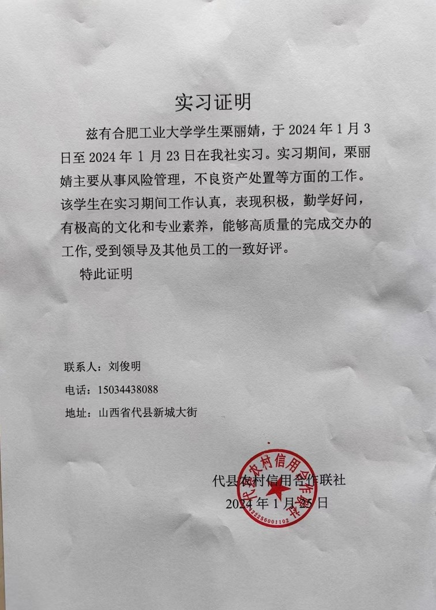
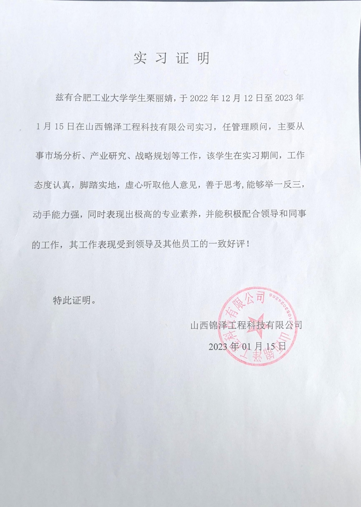

输入目标岗位，AI 将结合栗丽婧的详实经历进行深度适配分析。
大模型正在深度解析简历数据...

点击下方标签，查看对应技能的真实应用场景。
点击卡片展开详细信息与实习证明。
学术科研与商业实践的深度结合。
敏锐捕捉校园鲜花市场痛点，独立创立专属鲜花品牌，全渠道运营，实现极高的回购率。
参赛作品：“Sober”——疲劳驾驶检测系统。负责市场分析、商业模式构建与财务预测。
基于Sober项目的商业化落地方案，重点探讨转化为B2B可外包、可大规模部署的服务。
作为副队长，主导政企对接与实地调研，为后续的学术报告收集一手经营数据。
基于三下乡调研数据，运用 SPSS 进行定性与定量分析，构建评价指标体系。
涵盖奖学金、优秀共青团员、各类校级学科竞赛及优秀实践团队等综合荣誉。
华发集团
项目运营专员 | 2025.11 - 2026.07
核心动作与挑战
山西禾和时尚科技有限公司
商业分析助理 | 2025.01 - 2025.08
核心动作与挑战
实习证明

中铁十五局集团有限公司
数据实习生 | 2024.09 - 2024.12
核心动作与挑战
实习证明

代县农村信用合作联社
风险管理实习生 | 2024.01 - 2024.02
核心动作与挑战
实习证明

山西锦泽工程科技有限公司
管理顾问 | 2022.12 - 2023.01
核心动作与挑战
实习证明
